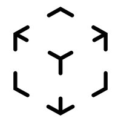
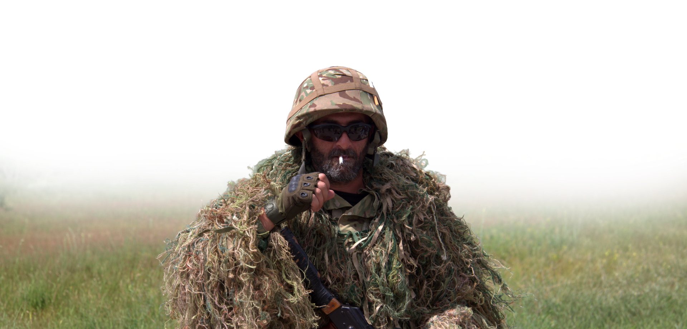
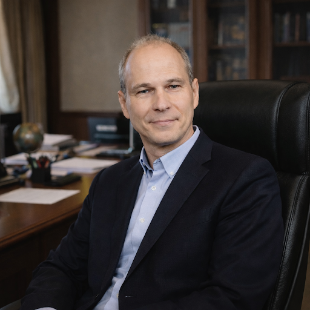
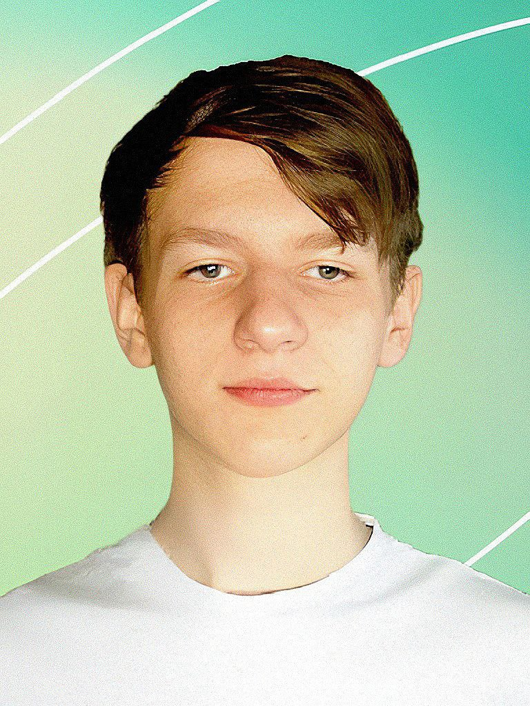
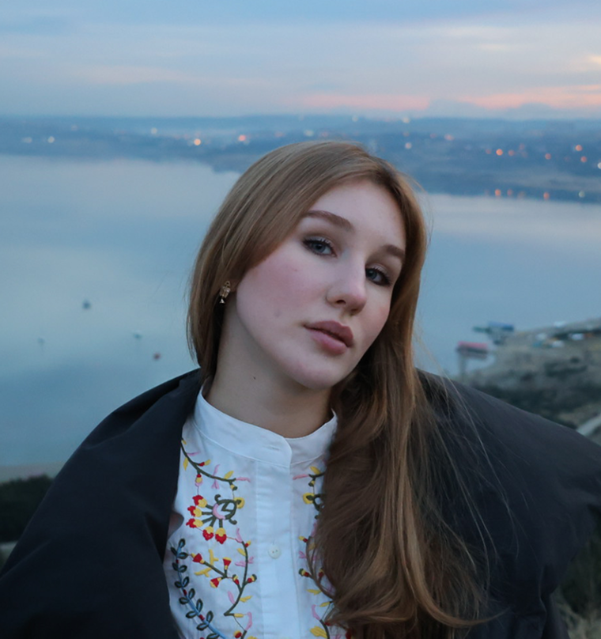

ВІРТУАЛЬНИЙ МУЗЕЙ
Фотографії:
Сергій Єрмаков

AR

ARПерегляньте галерею і оберіть найцікавіший кадр.
02 — ВІДКРИЙТЕ КАМЕРУНаведіть камеру смартфона на фотографію.
03 — ПОБАЧТЕ ІСТОРІЮКоли зображення розпізнається, фотографія оживе — і ви побачите відео, пов'язане з цим моментом.
Кожен кадр зберігає лише одну мить. Але за нею завжди є рух, звук,
люди та події, які не потрапили в об'єктив.
Наведіть камеру смартфона на фотографію — і дозвольте їй ожити.
Автор концепції та координатор проєкту, доцент кафедри Медіасистем та технологій Харківського національного університету радіоелектроніки, кандидат технічних наук, член правління Харківської спілки засобів масової інформації.
Олександр Супрун є автором концепції та координатором проєкту «Живі сторінки історії», що поєднує історичну пам’ять, сучасні медіатехнології та доповнену реальність. У межах проєкту він відповідає за формування загальної концепції, координацію роботи команди, визначення принципів використання AR-технологій для цифрового «оживлення» історичних фотографій та створення цілісного мультимедійного досвіду для користувача. Його професійний досвід у сфері медіа, цифрового контенту, мультимедійних технологій та освіти дозволяє поєднати технологічну складову проєкту з його історичним і суспільним змістом. Особливу увагу Олександр Супрун приділяє тому, щоб сучасні цифрові інструменти не замінювали історичний документ, а допомагали побачити за фотографією живу історію, людей та події, зберігаючи пам’ять про них для наступних поколінь.

Учасник команди проєкту, студент факультету Комп’ютерної інженерії Харківського національного університету радіоелектроніки.

Іван Жиляк бере участь у проєкті «Живі сторінки історії», долучаючись до технічної реалізації цифрової частини проєкту. Навчання за напрямом комп’ютерної інженерії дозволяє йому застосовувати знання з інформаційних технологій, програмування та цифрових систем під час роботи над AR-рішенням, яке перетворює звичайні історичні фотографії на інтерактивний цифровий контент. Участь у проєкті дає Івану можливість працювати не лише з технологіями, а й над реальним суспільно важливим завданням — збереженням та сучасною презентацією історичної пам’яті. У команді він набуває практичного досвіду роботи над мультимедійним продуктом, де комп’ютерні технології поєднуються з історичними матеріалами, цифровим контентом та доповненою реальністю.
Учасниця команди проєкту, студентка кафедри Медіасистем та технологій Харківського національного університету радіоелектроніки.
Дар’я Сиромятникова долучилася до проєкту «Живі сторінки історії» як
представниця нового покоління медіафахівців, які працюють на
перетині цифрового контенту, мультимедіа та сучасних технологій. У
межах проєкту вона бере участь у роботі з візуальними та
мультимедійними матеріалами, допомагаючи перетворювати історичні
фотографії на сучасний цифровий формат, доступний для взаємодії
через технології доповненої реальності.
Для Дар’ї цей проєкт є можливістю застосувати професійні знання на
практиці та долучитися до створення цифрового продукту, що має не
лише технологічну, а й важливу суспільну та культурну складову. Її
участь демонструє, як студенти медіаспеціальностей можуть
використовувати сучасні інструменти для збереження історичних
свідчень, візуалізації пам’яті та створення нових способів взаємодії
молоді з історією.
